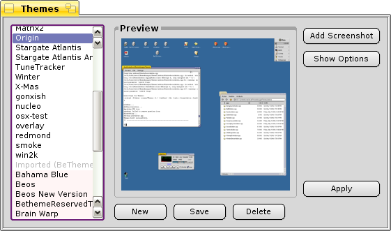
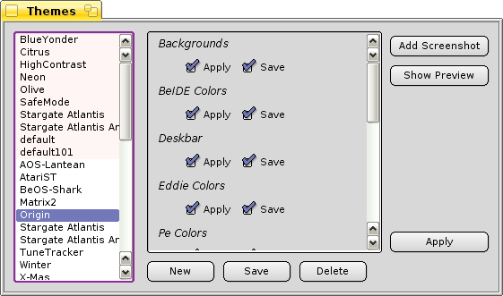

Theme Manager for BeOS and Haiku
© 2000-2008, François Revol.
About
Theme Manager allows you to change the appearance of BeOS (R5, Dano0 and Zeta) and Haiku.
It packages various interface settings in a single file and allows applying them on the fly.
Licence
Theme Manager is distributed under the MIT licence.
Sources are available in the Haiku subversion repository, and documented here and there.
Features
There are a many settings that are saved and restored by Theme Manager, depending on the platform. For example BeOS R5 doesn't support changing system colors. Each feature can be selectively disabled for applying and saving.
- Backgrounds
- Wallpapers and background color
- BeIDE Colors
- Applies the system document colors to BeIDE.
- Deskbar
- Saves and restores Deskbar location.
- Eddie Colors
- Applies the system document colors to the Eddie editor.
- Pe Colors
- Applies the system document colors to the Pe editor.
- Screensaver
- Saves and restores the screensaver and its settings.
- SoundPlay Color
- Applies the system colors to running instances of SoundPlay by simulating a color drop on the window.
- Sounds
- Saves and restores system sounds.
- Terminal
- Saves and restores the Terminal fonts, colors and size.
- System Colors and Fonts
- Saves and restores system colors and fonts.
- Winamp Skin
- Saves and restores the selected Winamp skin of both CL-Amp and SoundPlay.
- Window Decor
- Saves and restores the window decor.
Changing icons isn't yet supported.
BeTheme Import
BeTheme themes are searched for on BFS partitions and imported. Icons aren't supported yet, but backgrounds, deskbar position and window decor are supported.
MSTheme Import
MS .theme files are searched for on NTFS partitions and imported. Icons aren't supported yet, but colors and sounds are applied, window decor and deskbar position are forced to mimic Windows.
Feature Grid
| Feature | R5 | Dano/Zeta | Haiku | BeTheme (import) | MSTheme (import) |
| Backgrounds | X | X | X | X | X |
| BeIDE Colors | X | X | X | | |
| Deskbar | X | X | X | X | (forced) |
| Eddie Colors | X | X | X | | |
| Pe Colors | X | X | X | | |
| Screensaver | X | X | X | | X |
| SoundPlay Color | X | X | X | | |
| Sounds | X | X | X | | X |
| Terminal | X | X | X | | |
| System Colors | | X | X | | X |
| System Fonts | X | X | X | | |
| Winamp Skin | X | X | X | | |
| Window Decor | X | X | X | X | X |
Installation
Application
Just unzip the version of the Themes binary you need.
Themes
Themes are stored in folders containing a plain text "Theme" descriptor file, optionally a screenshot file for the preview, and eventually other files (bitmaps, sounds...).
Themes folders go to ~/config/settings/UIThemes/.
Usage
The interface should be self-describing.
On the left themes are listed, native first, then imported ones. Read-only theme items (from /etc/UIThemes and imported) have a different item background color.
The "New" button creates a new empty theme.
The "Save" button saves the current settings to the selected theme.
The "Delete" button moves the selected theme (its folder and files) to the Trash, from where it can eventually be recovered.
The "Add Screenshot" hides Themes window, takes a screenshot and attaches it to the selected theme.
The "Apply" button changes settings to match the selected theme.

The "Show Options" button brings a list of checkboxes to enable or disable selectively each feature on theme change. Click "Show Preview" to go back to the preview display.
